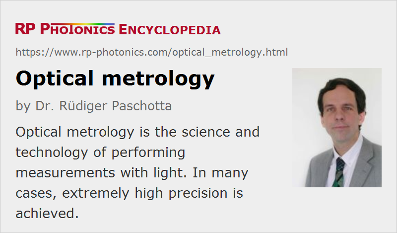

Optical Metrology
Definition: the science and technology of performing measurements with light
More specific term: frequency metrology
German: optische Metrologie
How to cite the article; suggest additional literature
Author: Dr. Rüdiger Paschotta
Optical metrology is the science and technology concerning measurements with light. Such measurements can either target properties of light and light sources or properties of objects such as dimensions, distances and temperatures. There is no strict boundary between those fields, because often one uses measured properties of light not just to characterize a light source, but for other purposes – for example, optical frequency metrology is used for ultraprecise optical clocks.
Some examples of optical metrology are:
- Optical distance measurements with lasers can be based on, e.g., interferometers or measurements of the time-of-flight of light pulses. This is an example for dimensional metrology.
- Highly precise angular measurements are possible with autocollimators, particularly with electronic autocollimators based on lasers.
- Optical profilometers are widely used for measuring surface topographies, e.g. in semiconductor chip production and for the quality control in optical fabrication. Form metrology also uses various other kinds of instruments for measuring surface shape (contour) and surface roughness.
- Optical time-domain reflectometers are used for inspecting fiber-optic links – for example, finding faulty fiber splices or fiber connectors.
- Optical powers can be measured with photodiodes, thermal power meters, or other equipment. Optical irradiance and other illumination measurements can address either some pure physical quantity such as an optical intensity (power per unit area) (radiometry) or something like a perceived brightness (photometry). Integrating spheres are utilized for radiation emitted in a wide range of direction.
- Spectral optical properties are measured with devices like spectrographs or other spectrometers, wavemeters and self-heterodyne setups.
- Optical frequency metrology deals with high-precision measurements of optical frequencies. One can produce ultraprecise optical clocks, surpassing the performance of cesium atomic clocks.
- Optical temperature sensors may be based on the analysis of the thermal emission of hot bodies, or rely on the measurement of occupation probabilities for energy levels of atoms or molecules.
- Fiber-optic temperature and strain sensors allow for distributed sensing, often of temperature and strain combined. They can be used, for example, for measurements in industrial processing plants, bridges and tunnels, buildings, oil and gas pipelines and power transmission lines.
Typical Qualities of Optical Metrology
In many cases, optical metrology can be extremely precise and is ultimately limited by laser noise or quantum noise in detection.
Optical measurements are usually quite fast and suitable e.g. for in-process metrology, i.e., for monitoring industrial production processes.
Generally, optical measurements are non-destructive. Even very sensitive parts can be checked without touching them (non-contact methods), i.e., without a risk of damage.
Suppliers
The RP Photonics Buyer's Guide contains 45 suppliers for optical metrology equipment. Among them:
Questions and Comments from Users
Here you can submit questions and comments. As far as they get accepted by the author, they will appear above this paragraph together with the author’s answer. The author will decide on acceptance based on certain criteria. Essentially, the issue must be of sufficiently broad interest.
Please do not enter personal data here; we would otherwise delete it soon. (See also our privacy declaration.) If you wish to receive personal feedback or consultancy from the author, please contact him e.g. via e-mail.
By submitting the information, you give your consent to the potential publication of your inputs on our website according to our rules. (If you later retract your consent, we will delete those inputs.) As your inputs are first reviewed by the author, they may be published with some delay.
See also: light, frequency metrology, optical clocks, interferometers, distance measurements with lasers, optical profilometers, laser noise, spectrometers, wavemeters, radiometry, photometry
and other articles in the category optical metrology
|  |
If you like this page, please share the link with your friends and colleagues, e.g. via social media:
These sharing buttons are implemented in a privacy-friendly way!